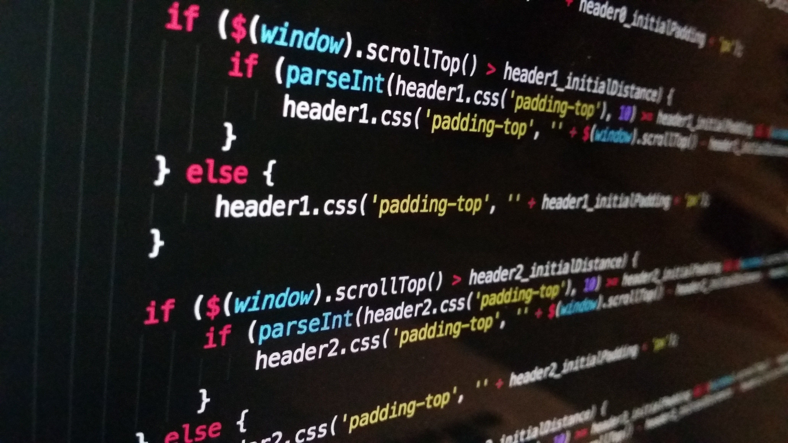

About Me
I am a motivated and detail-oriented data science student at Saint Paul College with a strong commitment to building practical technical skills and solving real-world problems through data. As a student from Saint Paul, Minnesota, I bring a global perspective, adaptability, and a strong work ethic to my academic and professional development.
My current studies focus on data science, complemented by coursework in Java programming and Geographic Information Systems (GIS).
I am eager to apply my growing technical skills in a professional setting where I can continue learning and contribute meaningfully to a team.
I have taken the following classes at Saint Paul College:
- Fundamentals, where I learned HTML and CSS
- Data Science
- Introduction to Java
- Geographic Information Systems (GIS)
My hobbies include watching movies, playing video games, and learning new programming languages.
